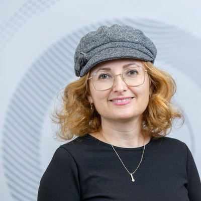

Introduction
Generative AI (GenAI) is reshaping library and information science (LIS), from discovery systems and user services in galleries, libraries, archives, and museums (Nehra & Bansode, 2024) to AI literacy education and search interfaces (Jenkins, 2026; Porter, 2026; Momeni & Hoeber, 2026). Yet adoption does not look the same everywhere: how GenAI is understood, used, and evaluated depends on local infrastructure, institutional priorities, professional norms, language environments, and access to resources. Three challenges stand out. First, the data behind these systems is uneven: non-English and regional scholarship is underrepresented, and models can favor dominant cultures while flattening others (Céspedes et al., 2025; Zheng et al., 2025; Lu et al., 2025). Second, readiness varies: librarians and LIS students differ widely in their AI skills and their grasp of ethical risks, especially in developing countries (Hlatshwako & Tsabedze, 2024; Hossain et al., 2026). Third, labor is at stake: GenAI can ease backlogs in cataloging, metadata, and archival description (Hollow et al., 2025), but it may also add pressure to cut LIS positions. How these issues play out across regions, languages, and institutions remains an open question.
This panel responds by convening scholars and practitioners from diverse cultural, linguistic, and institutional backgrounds to examine how GenAI is being understood, adopted, and critiqued across different LIS contexts. Organized around three connected dimensions—patterns of adoption, points of contextual misfit, and the limits of delegation—the panel seeks to surface both shared concerns and context-specific dynamics through cross-cultural dialogue. Attendees will leave with:
- a comparative view of how GenAI adoption differs across regions and institutional settings;
- a clearer sense of where current GenAI tools fit poorly across languages and local contexts; and
- a more grounded understanding of the limits, tensions, and human judgments that remain central to GenAI use in LIS.
Keywords: Large Language Models, Generative Artificial Intelligence, Scholarly Communication, Library Practice, Equity of AI, Cultural Differences, AI Literacy
Program
This 90-minute session is organized as a moderated comparative conversation. After brief introductions, the moderators will guide three thematic discussion segments (60 minutes in total), each followed by a 10-minute audience exchange and live poll (30 minutes in total). The session closes with open discussion and synthesis. The format is designed to encourage comparison, crosstalk, and audience participation rather than a sequence of stand-alone statements.
Friday, December 4, 2026 · All times in Bangkok time (UTC+7) · ASIS&T 2026 Virtual Meeting
| 4:30–4:50 pm20 min | Welcome & Theme 1: Uneven adoption and meaningful changeModerators introduce the panel; panelists discuss where GenAI is actually changing LIS work. |
| 4:50–5:00 pm10 min | Audience exchange & live poll IWhat most strongly shapes whether GenAI is meaningfully adopted in your context? |
| 5:00–5:20 pm20 min | Theme 2: Contextual misfit in GenAI toolsPanelists discuss where current GenAI tools fail to align with local languages, cultures, and infrastructures. |
| 5:20–5:30 pm10 min | Audience exchange & live poll IIWhere do current GenAI tools fit most poorly in your own context? |
| 5:30–5:50 pm20 min | Theme 3: Limits of delegation and human judgmentPanelists discuss what should remain under human judgment, even when automation appears efficient. |
| 5:50–6:00 pm10 min | Open Q&A, live poll III & closing synthesisWhich area most needs to remain under human judgment, even when GenAI tools are available? |
Poll results remain visible on screen during each discussion so that panelists and audience members can react to emerging patterns in real time.
Theme 1: Uneven adoption and meaningful change
This discussion will examine where GenAI is actually changing work in LIS and where its impact remains more rhetorical than practical. Panelists will reflect on whether GenAI has meaningfully altered research workflows, teaching practices, user services, scholarly communication, or institutional strategy in their own settings, and where claims of transformation outpace everyday realities. The discussion will focus not only on uptake, but also on the conditions that shape it, including access to tools, technical infrastructure, institutional priorities, administrative support, professional expectations, and local attitudes toward experimentation.
Guiding question: In your regional or institutional context, where has GenAI been most meaningfully adopted in research, teaching, or professional practice, and what kinds of changes has that adoption produced?
Follow-up: What conditions in your setting have most enabled or constrained that adoption?
Theme 2: Contextual misfit in GenAI tools
This discussion will focus on where current GenAI tools do not apply well across contexts. Although many systems are promoted as broadly useful, their design assumptions often reflect dominant language environments, cultural norms, information infrastructures, and workflow models that do not hold everywhere. Panelists will examine the kinds of errors, omissions, flattening, or misalignment that appear in their own contexts, whether in multilingual settings, regionally specific information environments, culturally grounded professional practices, or institutions with different levels of technological support.
Guiding question: What do current GenAI tools get wrong, miss, or flatten in your context that people outside your region or institution may not readily notice?
Follow-up: What factors most shape these failures in your context, and how do language, culture, infrastructure, and professional norms interact in producing them?
Theme 3: Limits of delegation and human judgment
The final discussion will address the boundaries of appropriate delegation. As GenAI tools become more capable and more embedded in everyday work, LIS researchers, educators, and practitioners face growing pressure to decide what can be responsibly offloaded and what should remain under human judgment. These may include evaluation, mediation, ethical judgment, care work, culturally situated interpretation, or forms of professional responsibility that cannot be reduced to speed or scale.
Guiding question: In research, teaching, or professional practice, what is one area that should not be delegated to GenAI in your context, even if the tool appears efficient?
Follow-up: What is at risk when that boundary is crossed, and how should LIS professionals decide where that boundary belongs?
Panelists
Bio
Dr. Yuan Li is an Assistant Professor in the School of Library and Information Science at the University of Alabama. Her research examines the intersection of human-computer and human-AI interaction, interactive information retrieval, and social media. She studies how people engage with information, information systems, and online platforms, including search engines, AI tools like ChatGPT, and social media, while working on complex, creative, or learning-oriented tasks. Dr. Li's work has been published in JASIST, SIGIR, CHIIR, ASIS&T, and the iConference. Her recent projects also include mixed-methods research on public discourse about generative AI and GLAM institutions using large-scale social media data. In this panel, she will help frame the discussion across the three themes and connect them to current LIS debates on GenAI use, platform contexts, and human judgment.
Bio
Jiaxin An is a PhD Candidate in the School of Information at the University of Texas at Austin. Her research focuses on agentic AI, human-AI interaction, and information behavior, with a particular emphasis on supporting vulnerable populations, including older adults and parents of children with ASD. Her current work examines the ethical design of AI agents, especially how to preserve the autonomy of aging populations in their interaction with agents for health purposes. Her work has been published at venues such as Journal of Pain, JASIST, ASIS&T, and CHIIR. In this panel, she will help draw out questions of ethical design, autonomy, and responsible delegation across contexts.
Bio
Dr. Orland Hoeber is a Professor in the Department of Computer Science at the University of Regina, Canada. His research focuses on interactive information retrieval, information visualization, and information behavior, with a particular emphasis on understanding how people seek and use information across complex search tasks. He is an advocate for information and AI literacy, data sovereignty, and maintaining human agency in the age of generative AI. He has published extensively in venues such as JASIST, IP&M, and CHIIR. His work on the human-centered design of search interfaces bridges computer science and library and information science. His cross-disciplinary perspective on how users interact with information systems makes him well-suited to explore how cultural contexts shape the study and application of AI in the LIS field.
Bio
Dr. Le Yang is a Senior Librarian and Associate Vice Provost & University Librarian for Collections, Discovery, and Digital Strategy at the University of Oregon Libraries. He holds a Ph.D. in Library Science from Wuhan University and an MLIS from the University of Rhode Island, with research interests in digital libraries, open repositories, and AI/ML applications in large-scale digital collections. His cross-cultural academic background, bridging Chinese and North American LIS traditions, offers a valuable perspective on how cultural contexts shape AI research and practice in the field. In this panel, he will contribute a practice-based cross-cultural view of how GenAI fits, or fails to fit, library infrastructure, discovery, and digital collections work.
Bio
Dr. Chang Liu is an Associate Professor in the Department of Information Management at Peking University. Her research spans information behavior and cognition, interactive information retrieval and interface design, search-as-learning, and digital literacy. In recent years, her work has focused on analyzing information behavior in scientific research and innovation activities and on designing intelligent systems. Specifically, her research has explored the intersection of AI and information practices, including AI-generated personas using large language models and user prompting behaviors in generative AI contexts, especially for complex search tasks. In this panel, she will contribute perspectives on search, prompting, and intelligent system design across research and learning settings.

Bio
Dr. Maayan Zhitomirsky-Geffet is a Full Professor in the Department of Information Science and Applied Artificial Intelligence at Bar-Ilan University. Her research develops multi-viewpoint knowledge organization models and data-driven methodologies to analyze bias, plurality, and representation in large-scale textual and cultural datasets across languages and domains. She focuses on identifying cultural, political, and linguistic biases in AI and information systems, including digital heritage collections and social media, and on designing frameworks that move beyond English-centric and single-perspective models toward more inclusive, context-aware AI. In this panel, she will contribute perspectives on multilingual representation, bias, and plurality, especially where GenAI systems flatten cultural and political differences.
Bio
Dr. Du is the Head of the School of Information and Communication Studies and a full Professor of Information Sciences at Charles Sturt University, New South Wales, Australia. Her research focuses on human information behavior, community engagement, library studies, and the social impact of emerging technologies, supported by over $2 million in Australian Research Council (ARC) and industry funding, with 140+ publications in top journals including JASIST, ARIST, IP&M, and JDOC. She has received numerous awards, including the ARC DECRA and the ASIS&T SIG USE Outstanding Contributions to Information Behavior Research Award. She has held professional leadership roles, including Chair of the Australian Library and Information Association Research Advisory Committee, Director-at-Large on the Board of the Association for Information Science and Technology, and currently serves as Treasurer of the iSchools organization and Interim Editor-in-Chief of ARIST. She is the lead chief investigator of the ARC-funded Discovery Project Australian Public Libraries and Social Capital: An Exploratory Study (DP250103150). In her presentation, she will examine the key challenges and opportunities that AI and digital transformation present for libraries, including their implications for equity, trust, and professional practice.
References
Cao, Y., Zhou, L., Lee, S., Cabello, L., Chen, M., & Hershcovich, D. (2023). Assessing cross-cultural alignment between ChatGPT and human societies: An empirical study. Proceedings of the First Workshop on Cross-Cultural Considerations in NLP (C3NLP) (pp. 53–67). Association for Computational Linguistics. https://doi.org/10.18653/v1/2023.c3nlp-1.7
Céspedes, L., Kozlowski, D., Pradier, C., Sainte-Marie, M. H., Shokida, N. S., Benz, P., Poitras, C., Ninkov, A. B., Ebrahimy, S., Ayeni, P., Filali, S., Li, B., & Larivière, V. (2025). Evaluating the linguistic coverage of OpenAlex: An assessment of metadata accuracy and completeness. Journal of the Association for Information Science and Technology, 76(6), 884–895. https://doi.org/10.1002/asi.24979
Free, D. (2026, April 24). ALA Draft Guidance of the Use of Artificial Intelligence in Libraries Comments Due May 8. ACRL Insider. https://acrl.ala.org/acrlinsider/ala-draft-guidance-of-the-use-of-artificial-intelligence-in-libraries-comments-due-may-8/
Hlatshwako, Z., & Tsabedze, V. (2024). Unlocking the future: Exploring librarian's perspectives and readiness for artificial intelligence integration in Eswatini libraries. Journal of Web Librarianship, 18(3), 149–168. https://doi.org/10.1080/19322909.2024.2364324
Hollow, A. G., Cline, L., Kardar, M., Komarnytska, O., & Warkentin, L. (2025). The AI-powered archivist: Harnessing generative artificial intelligence for streamlined archival description. Journal of Digital Media Management. https://hstalks.com/article/10077/the-ai-powered-archivist-harnessing-generative-art/
Hossain, Z., Biswas, Md. S., & Khan, G. (2026). AI literacy of library and information science students: A study of Bangladesh, India and Pakistan. Journal of Librarianship and Information Science, 58(1), 285–299. https://doi.org/10.1177/09610006241309323
Jenkins, S. (2026). Learning Excellence Library leaders for AI literacy. https://www.elsevier.com/academic-and-government/library-leaders-ai-literacy-education
Kim, J., Chen, H., Yang, L., & Simic, J. (2024). Exploring the application of artificial intelligence and machine learning in GLAM collections. Proceedings of the Association for Information Science and Technology, 61(1), 782–785.
Lu, J. G., Song, L. L., & Zhang, L. D. (2025). Cultural tendencies in generative AI. Nature Human Behaviour, 9(11), 2360–2369. https://doi.org/10.1038/s41562-025-02242-1
Momeni, M., & Hoeber, O. (2026). Does it still make sense? Organizing and summarizing resources in cross-session aggregated search. Proceedings of the ACM SIGIR Conference on Human Information Interaction and Retrieval, 28–39. https://doi.org/10.1145/3786304.3787873
Nehra, S. S., & Bansode, S. Y. (2024). Exploring the prospects and perils of integrating artificial intelligence and ChatGPT in academic and research libraries (ARL): Challenges and opportunity. Journal of Web Librarianship, 18(3), 111–132. https://doi.org/10.1080/19322909.2024.2390413
Porter, B. (2026, January 15). Libraries as AI literacy leaders. Information Matters. https://informationmatters.org/2026/01/libraries-as-ai-literacy-leaders/
Seikaly, K. (2024). "ChatGPT, how do people feel about you?": Emotions, artificial intelligence, and information behavior. Journal of Web Librarianship, 18(3), 133–148. https://doi.org/10.1080/19322909.2024.2382689
Zhang, Y., & Fang, Z. (2025). The Tower of Babel in science communication on social media: An analysis of linguistic diversity in Twitter mentions of scientific publications. Journal of the Association for Information Science and Technology, 76(11), 1431–1451. https://doi.org/10.1002/asi.70002
Zheng, M., Miao, L., Bu, Y., & Larivière, V. (2025). Understanding discrepancies in the coverage of OpenAlex: The case of China. Journal of the Association for Information Science and Technology, 76(11), 1591–1601. https://doi.org/10.1002/asi.70013